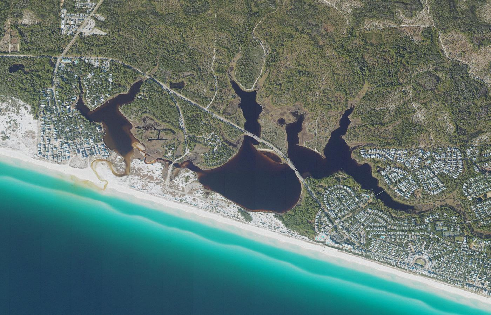
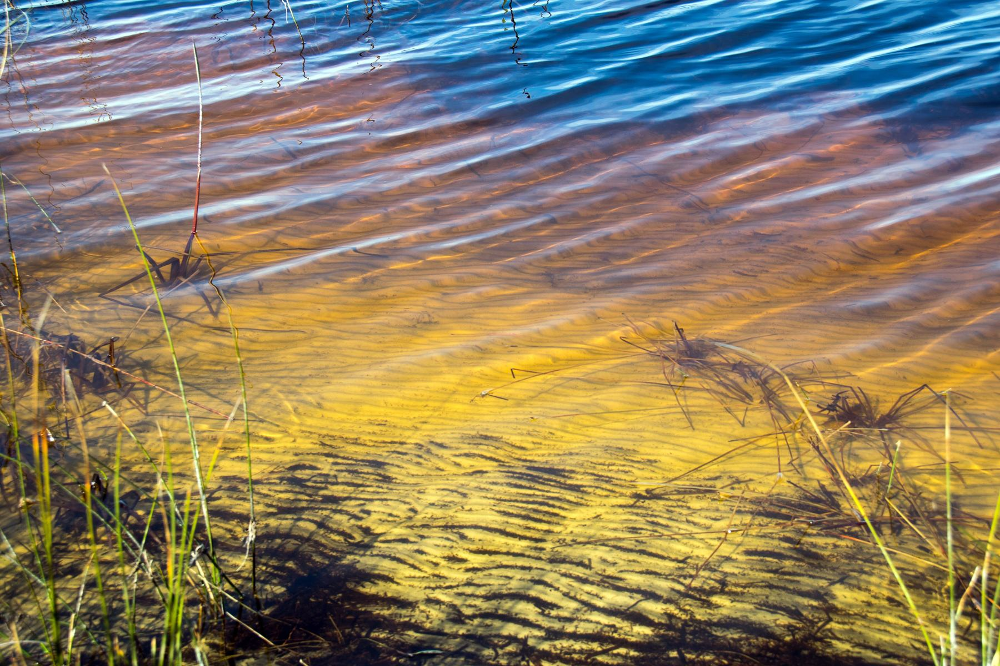
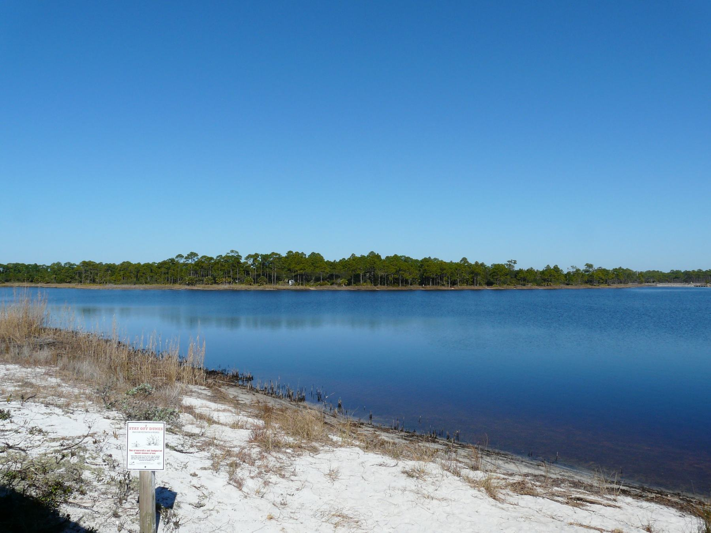
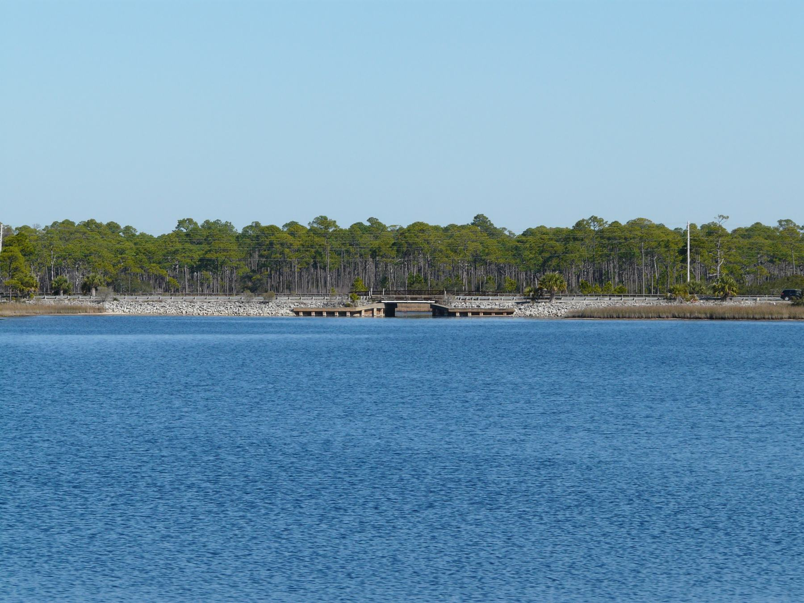
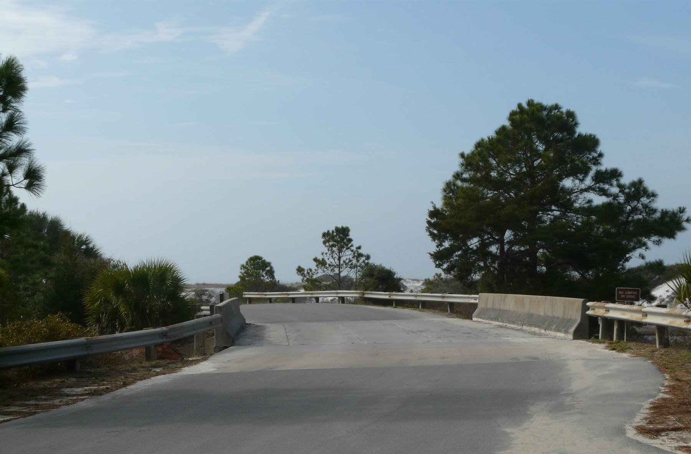

The iconic coastal dune lake.
Western Lake
Lake 11 of 15, west to east · Grayton Beach / WaterColor
Aerial photograph of Western Lake in Walton County, Florida, from the U.S. Geological Survey National Agriculture Imagery Program, centered on the USGS geographic-names point for this lake. Photo by U.S. Geological Survey, public domain, via the USGS National Map.
About
Western Lake is the basin many people picture when they think of a coastal dune lake on this coast. It covers about 244 acres in several lobes between Grayton Beach and WaterColor. A walk or a paddle on one arm does not show the whole lake.
Its outfall through the beach is the clearest public view of how these lakes work. Most of the time a berm of sand separates the lake from the Gulf. The water can stand fresh, or only slightly salty, fed by rain and groundwater. When the lake is high, that berm may breach on its own. It is also sometimes opened intentionally. Either way, a channel connects the two. Lake water flows seaward, Gulf water pushes in, and salinity climbs. The lake becomes brackish. Fish and other marine life can move through the cut.
When sand closes the channel, the exchange stops and freshwater inflows start to freshen the basin. The cycle is not a daily tide. It can take months. That swing, from fresh toward brackish and back, is the natural history of a coastal dune lake, seen here at a size and with a public shore that smaller lakes do not offer.
Grayton Beach State Park is the main public edge for paddling and fishing. Walton County also has a boat ramp on Hotz Avenue.
Public access
Grayton Beach State Park offers paddling and fishing on the lake. Walton County has a boat ramp on Hotz Avenue. The beach at the outfall is the other public face: a continuous berm when the lake is closed, and a channel to the Gulf when it is open.
Conditions at the cut change. A description written on a closed day will be wrong on an open one. This page does not post water levels or opening schedules.
Access rules, park fees, and reservation systems change. This page is a summary for orientation, not a permit or a promise that a shore is open.
Photographs
-

Shore of Western Lake at Grayton Beach State Park. Photo by Paul and Jill, CC BY 2.0, via Wikimedia Commons. -

Western Lake at Grayton Beach State Park. Photo by The Bushranger, CC BY-SA 4.0, via Wikimedia Commons. -

County Road 30A crossing Western Lake. Photo by The Bushranger, CC BY-SA 4.0, via Wikimedia Commons. -

Bridge over a western arm of Western Lake, along the entrance road to Grayton Beach State Park. Photo by The Bushranger, CC BY-SA 4.0, via Wikimedia Commons.
{kind=link}
{kind=link}
{kind=link}
{kind=link}